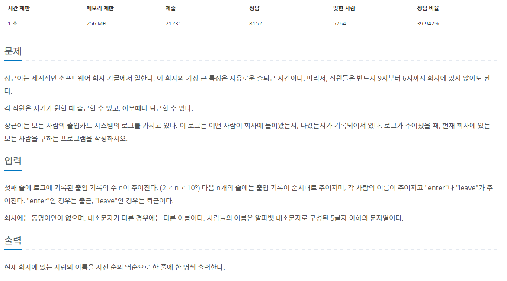
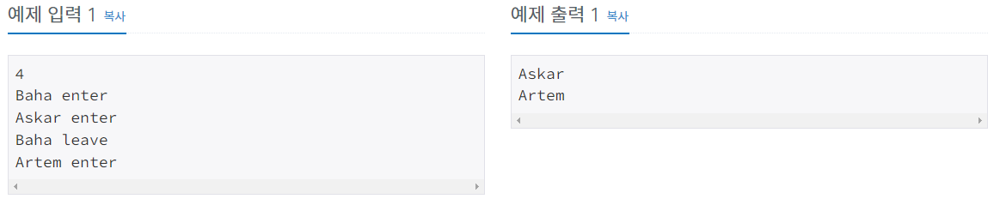
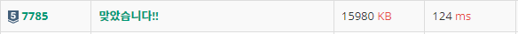

#INFO
난이도 : SILVER5
문제 유형 : 자료구조
출처 : https://www.acmicpc.net/problem/7785
7785번: 회사에 있는 사람
첫째 줄에 로그에 기록된 출입 기록의 수 n이 주어진다. (2 ≤ n ≤ 106) 다음 n개의 줄에는 출입 기록이 순서대로 주어지며, 각 사람의 이름이 주어지고 "enter"나 "leave"가 주어진다. "enter"인 경우는
www.acmicpc.net
 
#SOLVE
공백과 함께 문자열을 입력 받아야 하기에 cin이 아닌 getline 함수를 이용해 문자열을 입력받습니다.
입력받은 문자열은 enterLog에 저장합니다.
int n = 0;
cin >> n;
vector<string> enterLog(n);
cin.ignore(); // berfer clear
for(int i = 0; i < n; ++i){
getline(cin, enterLog[i]);
}
회사원들의 출입 여부를 기록할 isEntered map 자료구조를 하나 선언합니다.
map<string, string> isEntered;
다음으로 공백을 기준으로 문자열을 파싱합니다.
사람들의 이름은 from 변수에, 출퇴근 여부(enter or leave)는 to 변수에 저장합니다.
반약 to 변수의 값이 "enter" 출근 이라면 map 자료구조에 저장하고, 변수의 값이 "leave' 퇴근 이라면 map 자료구조에 저장된 정보를 삭제합니다.
// String-Parsing
for(int i = 0; i < n; ++i){
int blank = enterLog[i].find(' ');
string from = enterLog[i].substr(0, blank);
string to = enterLog[i].substr(blank + 1);
if(to == "enter"){
isEntered.insert(make_pair(from, to));
}
else{
isEntered.erase(from);
}
}
C++ STL map은 키값을 순서대로 저장하기에, reverse_iterator를 이용해 map에 저장된 key값을 뒤에서 부터 차례대로 출력하면 됩니다.
map<string, string>::reverse_iterator it;
for(it = isEntered.rbegin(); it != isEntered.rend(); it++){
cout << (*it).first << '\n';
}#CODE
#include <iostream>
#include <vector>
#include <map>
#include <string>
using namespace std;
int main(){
int n = 0;
cin >> n;
vector<string> enterLog(n);
cin.ignore(); // berfer clear
for(int i = 0; i < n; ++i){
getline(cin, enterLog[i]);
}
map<string, string> isEntered;
// String-Parsing
for(int i = 0; i < n; ++i){
int blank = enterLog[i].find(' ');
string from = enterLog[i].substr(0, blank);
string to = enterLog[i].substr(blank + 1);
if(to == "enter"){
isEntered.insert(make_pair(from, to));
}
else{
isEntered.erase(from);
}
}
map<string, string>::reverse_iterator it;
for(it = isEntered.rbegin(); it != isEntered.rend(); it++){
cout << (*it).first << '\n';
}
return 0;
}
도움이 되셨다면 하단의 공감 부탁드립니다!